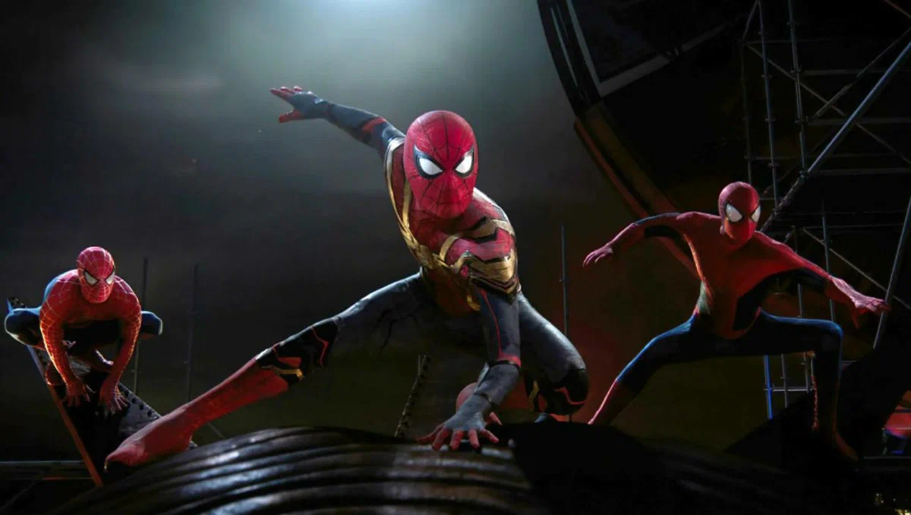
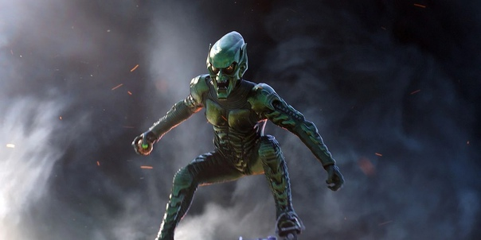
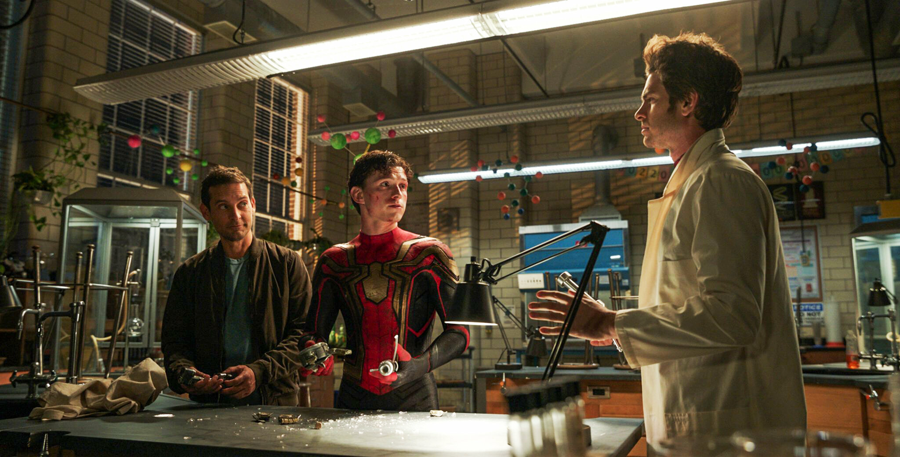

Человек Паук: Нет пути домой
- Режиссёр: Джон Уоттс
- Длительность: 139 мин
- Жанр: Боевик, Фантастика, Приключения
- Премьера: 15 декабря 2021
- В главных ролях: Том Холланд, Зендея, Бенедикт Камбербэтч, Мариса Томей, Джон Фавро
- Персонажи: Человек Паук, Доктор Стрэндж
Скриншоты



Человек Паук: Нет пути домой
Сюжет
Сюжет вновь разворачивается вокруг жизни Питера Паркера. Она просто идет кувырком, после того, как Мистерил поведал миру о том, что именно скромный и нерешительный Питер является настоящим Человеком-пауком. Главному герою приходится обратиться за помощью к доктору Стрэнджу. Но он что-то делает не так и вследствие неправильных действий нарушается ход пространства и времени. Перед человечеством открывается вход в мультивселенную.